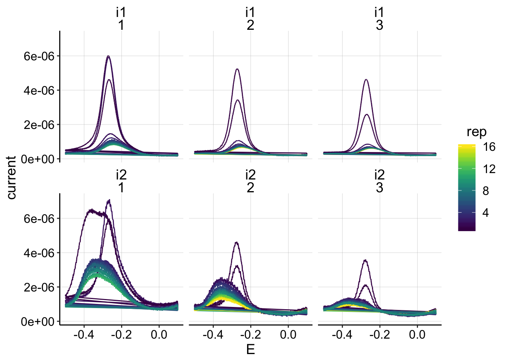
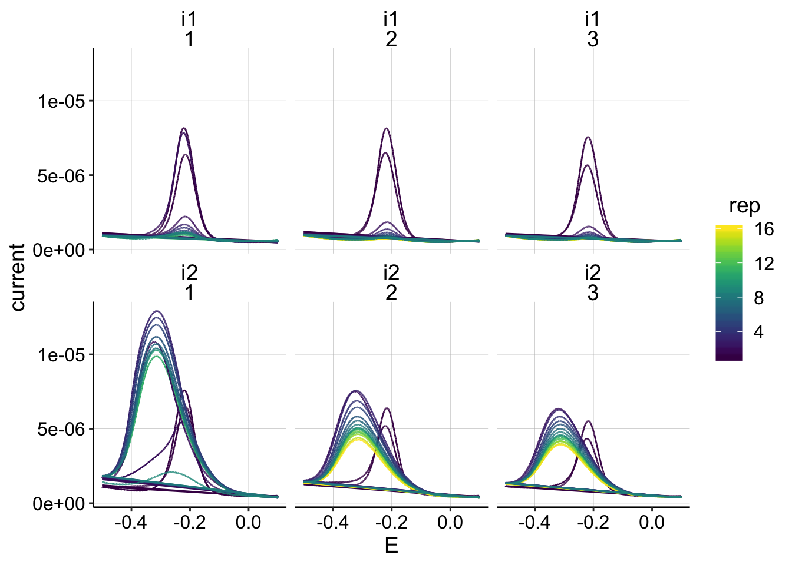
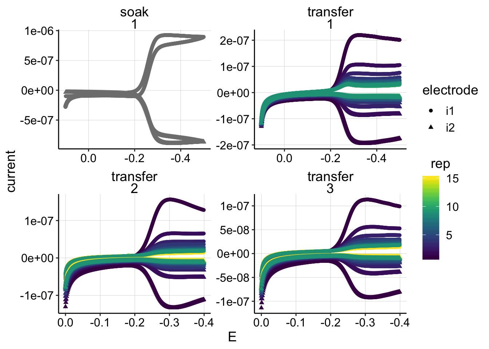
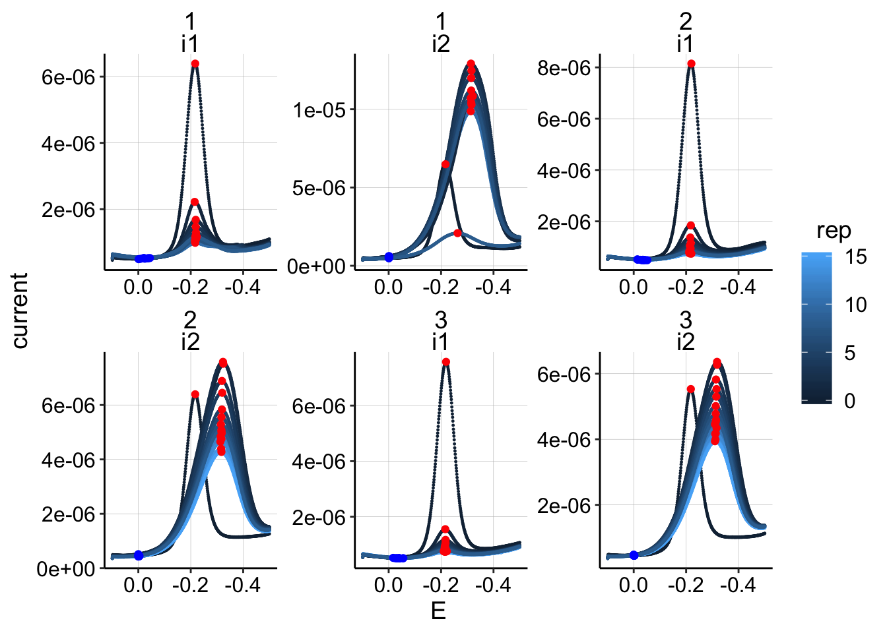
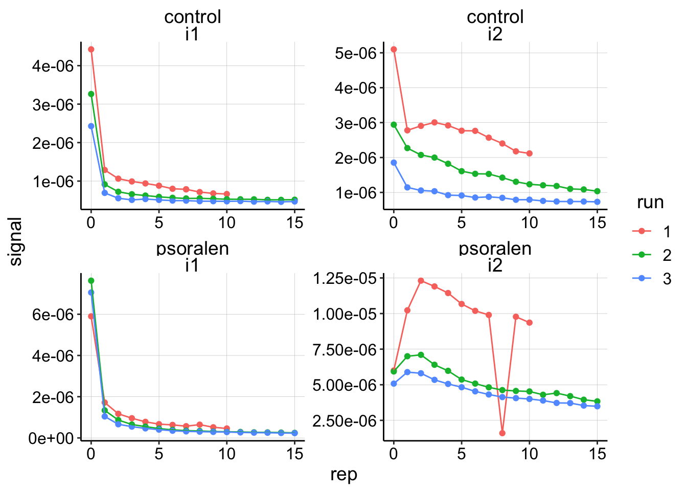
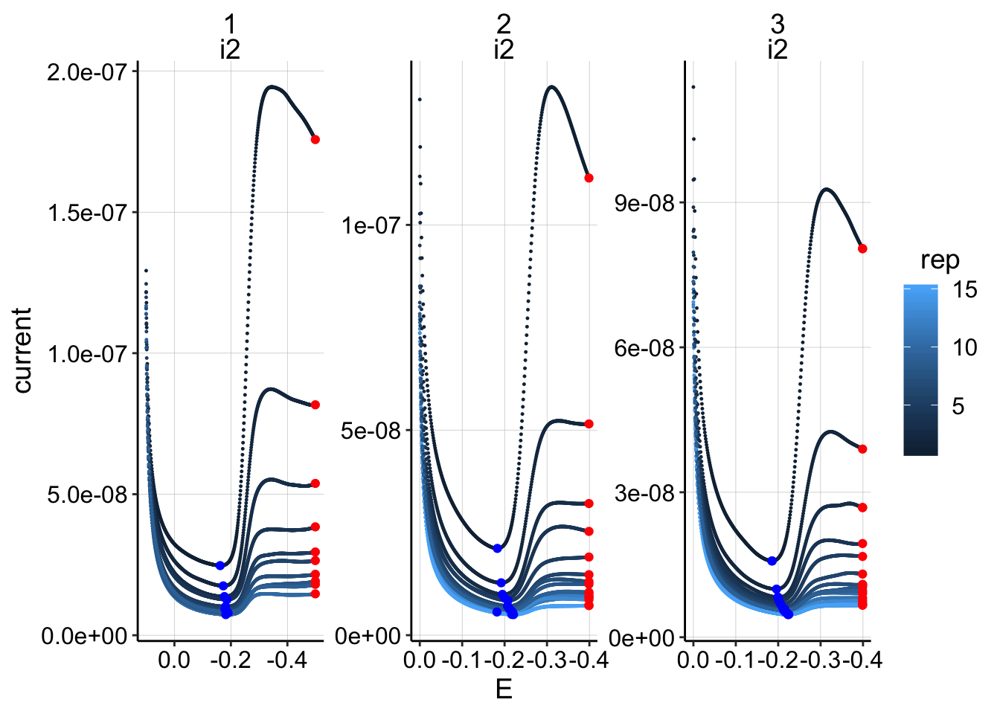
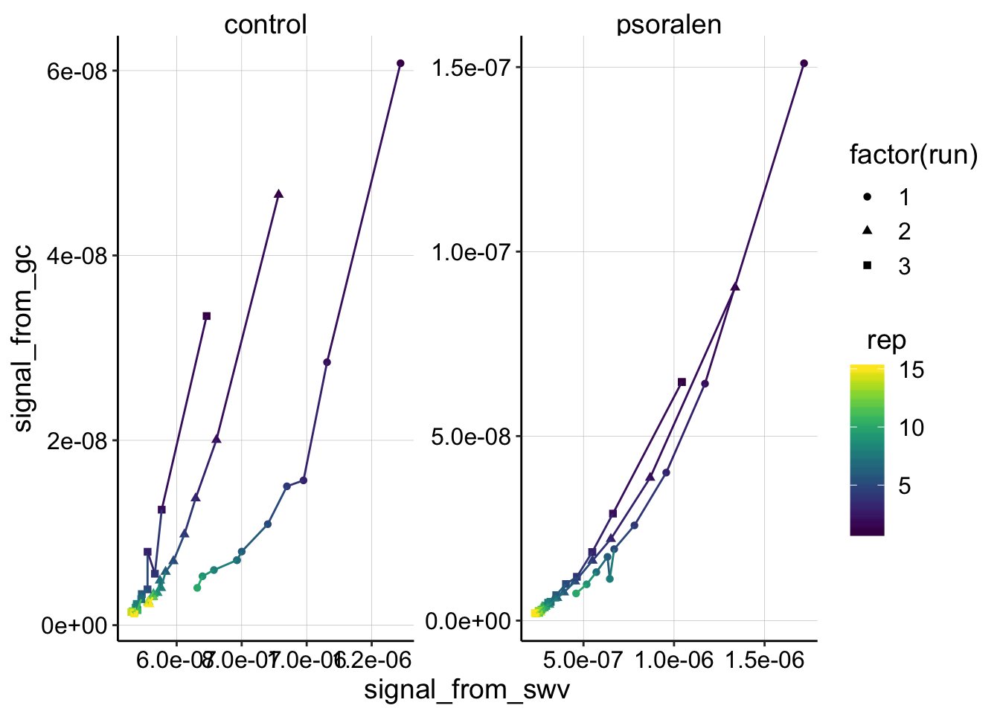
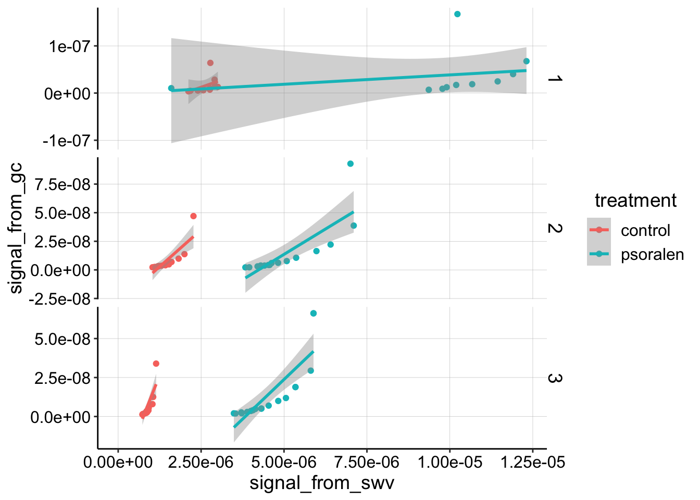
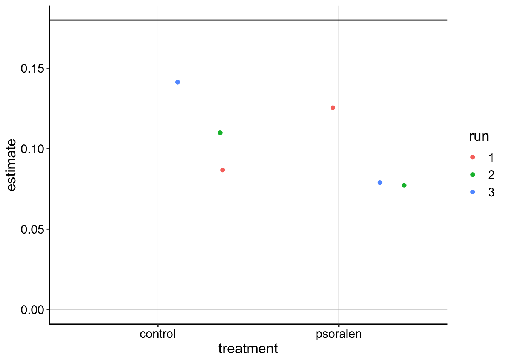
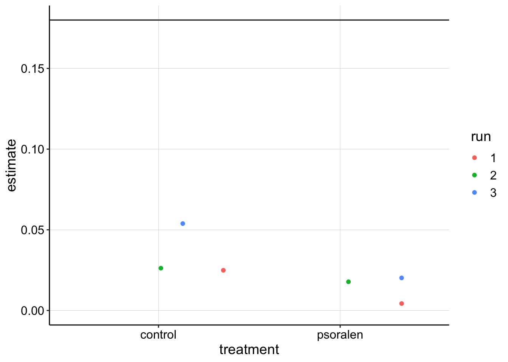

Psoralen treatment - Non equilibrium #1
\(D_{ap}\) Processing
01_08_19
library(tidyverse)
library(cowplot)
library(broom)
library(modelr)
library(viridis)
library(lubridate)
library(hms)
knitr::opts_chunk$set(tidy.opts=list(width.cutoff=60),tidy=TRUE, echo = TRUE, message=FALSE, warning=FALSE, fig.align="center")
source("../../tools/echem_processing_tools.R")
source("../../tools/plotting_tools.R")
theme_set(theme_1())Import
First let’s import the control \(D_{ap}\) data. SWV data first.
control_data_path = '../Data/Control_Dap/'
#divide swv into rep and subrep and then subtract 1 from rep to match with GC
SWV_control_filenames <- dir(path=control_data_path,pattern = "[SWV]+.+[txt]$")
SWV_control_file_paths <- paste(control_data_path,SWV_control_filenames,sep='')
swv_data_cols <- c('E','i1','i2')
filename_cols = c('PHZadded','treatment','reactor','run','echem','rep')
swv_skip_rows=18
swv_control_data <- echem_import_to_df(filenames = SWV_control_filenames,
file_paths = SWV_control_file_paths,
data_cols = swv_data_cols,
skip_rows = swv_skip_rows,
filename_cols = filename_cols,
rep = T)
ggplot(swv_control_data, aes(x=E, y=current,color=rep))+geom_path()+
facet_wrap(electrode~run)+
scale_color_viridis()
Ok, we knew that the i2 of the SWVs looked weird, but other than that, nothing seems obviously wrong. Next time try only scanning i1 to see if that changes anything?
Now Let’s import the control GC data.
control_data_path = '../Data/Control_Dap/'
#divide swv into rep and subrep and then subtract 1 from rep to match with GC
gc_control_filenames <- dir(path=control_data_path,pattern = "[GC]+.+[txt]$")
gc_control_file_paths <- paste(control_data_path,gc_control_filenames,sep='')
gc_data_cols <- c('E','i1','i2','t')
filename_cols = c('PHZadded','treatment','reactor','run','echem','rep')
gc_skip_rows=21
gc_control_data <- echem_import_to_df(filenames = gc_control_filenames,
file_paths = gc_control_file_paths,
data_cols = gc_data_cols,
skip_rows = gc_skip_rows,
filename_cols = filename_cols,
rep = T)
ggplot(gc_control_data, aes(x=E, y=current,color=rep,shape=electrode))+geom_point()+
facet_wrap(reactor~run,scales='free')+
scale_color_viridis()+
scale_x_reverse()
Ok, the GC’s look reasonable as expected.
Let’s now repeat for the psoralen treated biofilm. SWVs:
psoralen_data_path = '../Data/Psoralen_Dap/'
#divide swv into rep and subrep and then subtract 1 from rep to match with GC
SWV_psoralen_filenames <- dir(path=psoralen_data_path,pattern = "[SWV]+.+[txt]$")
SWV_psoralen_file_paths <- paste(psoralen_data_path,SWV_psoralen_filenames,sep='')
swv_data_cols <- c('E','i1','i2')
filename_cols = c('PHZadded','treatment','reactor','run','echem','rep')
swv_skip_rows=18
swv_psoralen_data <- echem_import_to_df(filenames = SWV_psoralen_filenames,
file_paths = SWV_psoralen_file_paths,
data_cols = swv_data_cols,
skip_rows = swv_skip_rows,
filename_cols = filename_cols,
rep = T)
ggplot(swv_psoralen_data, aes(x=E, y=current,color=rep))+geom_path()+
facet_wrap(electrode~run)+
scale_color_viridis()
and GCs:
psoralen_data_path = '../Data/Psoralen_Dap/'
#divide swv into rep and subrep and then subtract 1 from rep to match with GC
gc_psoralen_filenames <- dir(path=psoralen_data_path,pattern = "[GC]+.+[txt]$")
gc_psoralen_file_paths <- paste(psoralen_data_path,gc_psoralen_filenames,sep='')
gc_data_cols <- c('E','i1','i2','t')
filename_cols = c('PHZadded','treatment','reactor','run','echem','rep')
gc_skip_rows=21
gc_psoralen_data <- echem_import_to_df(filenames = gc_psoralen_filenames,
file_paths = gc_psoralen_file_paths,
data_cols = gc_data_cols,
skip_rows = gc_skip_rows,
filename_cols = filename_cols,
rep = T)
ggplot(gc_psoralen_data, aes(x=E, y=current,color=rep,shape=electrode))+geom_point()+
facet_wrap(reactor~run,scales='free')+
scale_color_viridis()+
scale_x_reverse()
Quantification
Great! Now that we have all the data imported, let’s combine the SWVs and GCs and quantify them.
#combine dfs
swv_all_data <- rbind(swv_control_data,swv_psoralen_data) %>%
mutate(rep=rep-1)
#quantify
unique_id_cols = c('PHZadded','treatment','reactor','run','echem','rep','minutes','PHZaddedInt','electrode')
swv_signals <- echem_signal(df = swv_all_data,
unique_id_cols = unique_id_cols,
max_interval = c(0.0,-0.4),
min_interval = c(0.0,-0.4)) ggplot(swv_all_data %>% filter(reactor=='transfer' & treatment=='control'), aes(x=E,y=current,group=run,color=rep))+geom_point(size=0.2)+
geom_point(data=swv_signals %>% filter(reactor=='transfer' & treatment=='control'), aes(x=E_from_maxs,y=current_from_maxs),color='red') +
geom_point(data=swv_signals %>% filter(reactor=='transfer' & treatment=='control'), aes(x=E_from_mins,y=current_from_mins),color='blue')+
facet_wrap(run~electrode,scales='free')+
scale_x_reverse()
ggplot(swv_all_data %>% filter(reactor=='transfer' & treatment=='psoralen'), aes(x=E,y=current,group=run,color=rep))+geom_point(size=0.2)+
geom_point(data=swv_signals %>% filter(reactor=='transfer' & treatment=='psoralen'), aes(x=E_from_maxs,y=current_from_maxs),color='red') +
geom_point(data=swv_signals %>% filter(reactor=='transfer' & treatment=='psoralen'), aes(x=E_from_mins,y=current_from_mins),color='blue')+
facet_wrap(run~electrode,scales='free')+
scale_x_reverse()
ggplot(swv_signals %>% filter(reactor=='transfer'), aes(x=rep,y=signal,color=run))+geom_point()+
geom_line()+
facet_wrap(treatment~electrode,scales='free')
Now for GCs
gc_all_data <- rbind(gc_control_data,gc_psoralen_data)
gc_i2_data <- gc_all_data %>%
filter(electrode=='i2') %>%
mutate(current=-current) %>%
group_by(rep,run,reactor,treatment) %>%
mutate(min_E = min(E))
df_maxs <- gc_i2_data %>%
filter(E==min_E) %>%
mutate(max_current=current)
df_mins <- gc_i2_data %>%
filter(E<=0.1 & E>=-0.4) %>%
group_by(!!!syms(unique_id_cols)) %>%
mutate(min_current=min(current)) %>%
filter(current==min_current)
df_sigs <- left_join(df_maxs,df_mins,by=unique_id_cols,suffix=c('_from_maxs','_from_mins')) %>%
mutate(signal=max_current-min_current)
#gc_signals <- echem_signal(df = gc_i2_data, unique_id_cols = unique_id_cols, max_interval = c(-0.39,-0.41), #min_interval = c(-0.1,-0.4))#
# ggplot(gc_i2_data %>% filter(reactor=='transfer' & treatment=='psoralen'), aes(x=E,y=current,group=run,color=rep))+geom_point(size=0.2)+
# geom_point(data=gc_signals %>% filter(reactor=='transfer' & treatment=='psoralen'), aes(x=E_from_maxs,y=current_from_maxs),color='red') +
# geom_point(data=gc_signals %>% filter(reactor=='transfer' & treatment=='psoralen'), aes(x=E_from_mins,y=current_from_mins),color='blue')+
# facet_wrap(run~electrode,scales='free')+
# scale_x_reverse()
ggplot(gc_i2_data %>% filter(reactor=='transfer' & treatment=='psoralen'), aes(x=E,y=current,group=run,color=rep))+geom_point(size=0.2)+
geom_point(data=df_sigs %>% filter(reactor=='transfer' & treatment=='psoralen'), aes(x=E_from_maxs,y=current_from_maxs),color='red') +
geom_point(data=df_sigs %>% filter(reactor=='transfer' & treatment=='psoralen'), aes(x=E_from_mins,y=current_from_mins),color='blue')+
facet_wrap(run~electrode,scales='free')+
scale_x_reverse()
Quantification looks okay right now, although you can see that the max data point on the GC’s should ideally just be the last datapoint, but I’m not going to worry about it right now.
Join SWV and GC
# swv_gc_signals <- left_join(swv_signals, gc_signals,
# by=c('PHZadded',"PHZaddedInt","treatment","reactor","run","rep"),
# suffix=c("_from_swv","_from_gc"))
swv_gc_signals <- left_join(swv_signals, df_sigs,
by=c('PHZadded',"PHZaddedInt","treatment","reactor","run","rep"),
suffix=c("_from_swv","_from_gc"))
write_csv(swv_gc_signals,"01_08_19_processed_swv_gc_signals.csv")# plotly_test <- ggplot(swv_gc_signals %>% filter(electrode_from_swv=='i1' & reactor=='transfer'), aes(x=signal_from_swv, y=signal_from_gc,color=rep,shape=run))+geom_point()+geom_line()+
# facet_wrap(~treatment,scales='free')+
# xlim(0,2e-06)+
# scale_color_viridis()
#
# plotly::ggplotly(plotly_test)
ggplot(swv_gc_signals %>% filter(electrode_from_swv=='i1' & rep>0 & reactor=='transfer'), aes(x=signal_from_swv, y=signal_from_gc,color=rep,shape=factor(run)))+geom_point()+geom_line()+
facet_wrap(~treatment,scales='free')+
scale_color_viridis()
ggplot(swv_gc_signals %>% filter(electrode_from_swv=='i2'), aes(x=signal_from_swv, y=signal_from_gc,color=rep,shape=run))+geom_point()+geom_line()+
facet_wrap(~treatment,scales='free')+
scale_color_viridis()
for control, transfer 2 point 2, the GC signal is missing because the run only went out to -0.35V and the max point was quantified at -0.4. I could fix this later.
This plot is interesting. I think that it shows the psoralen data is quite good - those three independent runs look like they are replicates, controlled by the same process, but the control looks sort of a mess. Further, for both biofilms, the first PYO signals are consistently lower after each run. Perhaps this means that the biofilm is slowly degrading while we manipulate it, or that it’s holding onto PYO less each time…
This is the first time that an SWV vs. GC plot has looked clearly curved - is this an artifact or real?
swv_gc_lms <- swv_gc_signals %>%
filter(reactor=='transfer' & rep>0) %>%
group_by(run,treatment,electrode_from_swv) %>%
do(tidy(lm(signal_from_gc~signal_from_swv,.)))
swv_gc_lms %>% filter(electrode_from_swv=='i1' & term =='signal_from_swv') %>%
ggplot(.,aes(x=treatment,y=estimate,color=run))+geom_jitter()+
geom_hline(yintercept = 0.18)+
ylim(0,NA)
swv_gc_lms %>% filter(electrode_from_swv=='i2' & term =='signal_from_swv') %>%
ggplot(.,aes(x=treatment,y=estimate,color=run))+geom_jitter()+
geom_hline(yintercept = 0.18)+
ylim(0,NA)